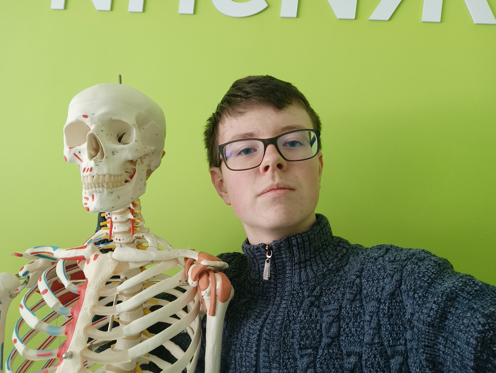

Обо мне
Привет! Меня зовут Дмитриев Даниил. Я живу в городе Новомосковске Тульской области. Учусь в «Созвездии» и активно готовлюсь к поступлению.
🇨🇳 Моя большая мечта — поступить в Китайский институт шашлыка и освоить искусство его приготовления у лучших мастеров Поднебесной. Но, увы, для этого нужно отлично знать китайский язык и набрать очень много баллов, что пока для меня нереально.
Поэтому мой реалистичный план — поступление в Университет имени Баумана. Туда не надо лететь на самолете и учить язык. А шашлык — это мечта, к которой можно вернуться позже. 😄
- 🏙️ Город: Новомосковск, Тульская область
- 🏫 Учусь в: «Созвездие»
- 🎯 Мечта: Китайский институт шашлыка
- 📚 Реальность: поступление в Бауманский университет
Мечта и реальность
Бауманский университет (Москва)
Московсккий университет имени Баумана. Хорошое образование, родная страна, не нужно учиьть язык
- ✅ Баллов нужно меньше
- ✅ Живу прямо в городе
- ✅ Реальный шанс поступить
Китайский институт шашлыка
Настоящая школа шашлычного мастерства в Китае. Лучшие повара, традиционные рецепты, дым мангала и запах специй на весь кампус.
- ❌ Нужен китайский язык
- ❌ Очень высокие проходные баллы
- ❌ Далеко от дома
Полезные ссылки
Почему именно НИ РХТУ?
📉 Ниже проходной балл
Поступить в Бауманский университет реальнее, чем во многие вузы, не говоря уже о китайских.
🏠 Рядом с домом
Институт находится в 4 чачсах езды — смогу ездить домой на выходных.
🔬 Сильное техническое образование
Университет имени баумана — серьёзная база для будущей профессии.